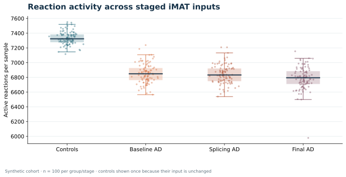

Research-ready inputs
Count matrices, quantification outputs, metadata, contrasts, and authorized public/anonymized datasets.
Research bioinformatics service studio
Insights From BioData turns transcriptomics datasets into inspectable tables, publication-ready figures, reproducible scripts, and concise research-support notes without clinical diagnosis or patient-level medical interpretation.
Example output from public dataset.
Featured computed project · synthetic cohort
Follow 200 artificial samples through Human-GEM 1.12.0, COBAMP reaction scoring, TROPPO iMAT with Gurobi, and Fisher plus reporter-like statistics. The showcase includes all three reaction matrices, four vector figures, and the checks behind them.
A reproducible methods demonstration using synthetic inputs. No biological or clinical conclusion is drawn from these figures.

100 samples per group or stage · verified reaction vectorsResearch profile
I am Burak, a graduate student in Bioinformatics and Systems Biology at Gebze Technical University. My research combines RNA splicing analysis and genome-scale metabolic modeling in Alzheimer's disease. I build reproducible RNA-seq and splicing workflows, and I deliver clean figures and clear methods notes.
Count matrices, quantification outputs, metadata, contrasts, and authorized public/anonymized datasets.
R, Python, DESeq2-style analysis, rMATS/SUPPA2-oriented splicing review, GSEA/pathway summaries.
Figures, result tables, scripts, and concise methods notes organized for researcher review.
Positioning
The service focus is deliberately narrow: transcriptomics, alternative splicing, scientific visualization, pathway summaries, and small automation tools for wet-lab data handling. The goal is clean delivery, not overpromising.
Open analysis example
Explore the synthetic iMAT demonstration with its computed figures, sample diagnostics, reaction matrices, statistics, and reproduction notes.
Core services
DESeq2-style workflows with QC summaries, filtered count matrices, normalized counts, DEG tables, PCA, heatmaps, volcano plots, and concise reports.
rMATS/SUPPA2-oriented workflow notes, exon skipping and junction-level summaries, event filtering, and sashimi plot preparation for selected genes.
PCA, sample-distance heatmaps, DEG heatmaps, volcano plots, pathway plots, expression summaries, and clean figure exports for manuscript workflows.
GSEA and enrichment-oriented summaries that translate ranked gene lists or DEG sets into readable pathway-level research notes.
Also available: small Python/Bash helpers for repetitive lab data tasks.
Engagement options
Typical time: 2-3 days.
Best for teams that already have tables and need polished scientific figures.
Typical time: 5-7 days.
Best for a focused differential expression comparison with reusable outputs.
Time depends on scope.
Best for deeper review around events, genes, pathways, or selected biology.
Pricing depends on dataset size and scope. Send a brief to get a quote.
Project scope builder
Select the analysis blocks that match the dataset. The brief updates into a compact handoff summary for discussion and platform-based project scoping.
Deliverable explorer
Switch between common request types to see the expected files, quality checks, and researcher-facing outputs before a project begins. These are illustrative examples, not measured results or guaranteed deliverables.
A focused comparison workflow with count filtering, metadata-aware design, differential expression tables, and publication-ready plots.
Proof of work
Three computed Gurobi/iMAT layers for 100 AD-labelled and 100 control-labelled artificial samples, with downloadable reaction matrices, Fisher and reporter-like tables, vector figures, and input audits.
Open the results showcaseCurated Alzheimer/young comparison workflow integrating Salmon quantification outputs, Human-GEM resources, GEMsplice/iMAT-style scripts, summary tables, figures, and final report structure.
Open repositoryEnd-to-end DEG workflow with count data, metadata, QC, DESeq2 analysis, PCA, heatmaps, volcano plot, result tables, and a short interpretation report.
A public rMATS skipped-exon analysis example with event filtering and candidate review notes.
Open repositorySequence alignment, FASTA utilities, motif search, volcano plotting, variant summaries, and interactive R/Shiny exploration examples.
Open repositoryExample results
All 100 samples in each group or stage are shown. The same control vectors are used throughout the staged comparison.
Synthetic-data methods demonstration. Open full results and downloads.
Each artificial AD-labelled sample is paired with its own splicing and rank-adjusted model.
Synthetic-data methods demonstration; no disease inference.
Portfolio figure showing differential expression signal across genes, prepared as part of a reproducible RNA-seq workflow.
Example output from public dataset.
Quality-control style output for reviewing sample relationships before interpretation.
Example output from public dataset.
Expression-pattern figure prepared for selected differentially expressed genes.
Example output from public dataset.
Advanced portfolio output comparing Alzheimer and young comparison groups across pathway-level metabolic flux changes.
Public RNA-seq source: PRJNA670209 (SRR12850842, SRR12850850–54; 3 AD, 3 young comparison samples).
Projection panels showing how sample groups separate across selected metabolic objective values.
Public RNA-seq source: PRJNA670209 (SRR12850842, SRR12850850–54; 3 AD, 3 young comparison samples).
Pathway-level scatter plot from the HumanGEM tx2gene analysis.
Public RNA-seq source: PRJNA670209 (SRR12850842, SRR12850850–54; 3 AD, 3 young comparison samples).
Portfolio outputs are shown for research-support demonstration only. Clinical diagnosis, treatment decisions, and patient-specific interpretation are outside the service scope.
Delivery standards
Clear outputs and a traceable analysis trail for each project.
Plots are made for manuscripts and reports, with clean labels and export formats.
Every project includes tables, figures, scripts, and method notes you can reuse.
Inputs, contrasts, filtering choices, and output names are made explicit before delivery.
Clinical diagnosis, treatment decisions, and patient-specific interpretation remain out of scope.
Technical specifications
Process
Clarify organism, sample groups, metadata, contrast, desired figures, and what data can be shared safely.
Analyze with transparent scripts, named outputs, quality checks, and checkpoints that make the result traceable.
Provide tables, plots, scripts, and a short report that explains what was done and what the results show.
Technical stack
Project handoff
FAQ
Yes. Public, simulated, anonymized, or properly authorized research datasets are all fine to start with.
Typical delivery includes result tables, figure exports, reusable scripts or notebooks when appropriate, and a concise methods/result summary.
No. The service is limited to research support, data analysis, visualization, and reproducible reporting. Clinical decisions are outside scope.
A clear sample sheet, group labels, contrast definition, organism/reference version, expected figures, and any previous analysis decisions.
Services are positioned for research support, data analysis, visualization, and reproducible reporting. Clinical diagnosis, treatment decisions, or patient-specific medical interpretation are outside the scope.
Start small, communicate clearly
Share the project goal, organism, data type, sample groups, expected outputs, and whether you need figures, tables, scripts, or a short report. Initial projects can be coordinated through trusted freelance platforms or a structured project brief.
I usually reply within 24-48 hours.